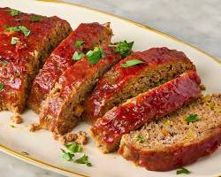

Maybe you didn't mean to choose meatloaf,
go back to the main page
Worlds Best Meatloaf

Ingredients
- 2 large eggs
- ⅔ cup milk
- 2 teaspoons salt
- ¼ teaspoon ground black pepper
- 3 slices bread, crumbled
- 1 ½ pounds ground beef
- 1 onion, chopped
- 1 cup shredded Cheddar cheese
- ½ cup shredded carrot
- ¼ cup brown sugar
- ¼ cup ketchup
- 1 tablespoon prepared yellow mustard
Instructions
- Preheat oven to 350 degrees F (175 degrees C).
-
In a large bowl, beat together eggs, milk, salt and pepper. Stir in
bread crumbs, ground beef, onion, Cheddar cheese and carrot until well
blended. Press into a lightly greased 9x5 inch loaf pan.
-
In a separate small bowl, mix together brown sugar, ketchup and mustard.
Spread over the meatloaf.
-
Bake for 1 hour in the preheated oven, until juices are clear. Let stand
10 minutes before slicing.
be sure to check the meatloaf is fully cooked before serving.